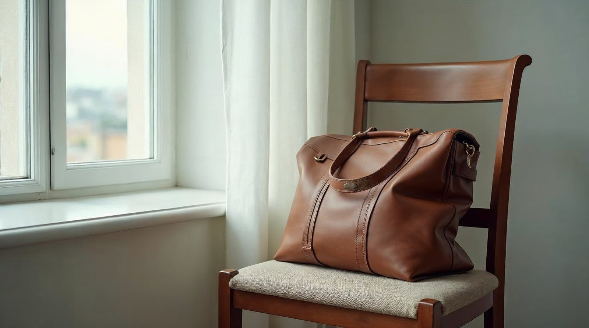
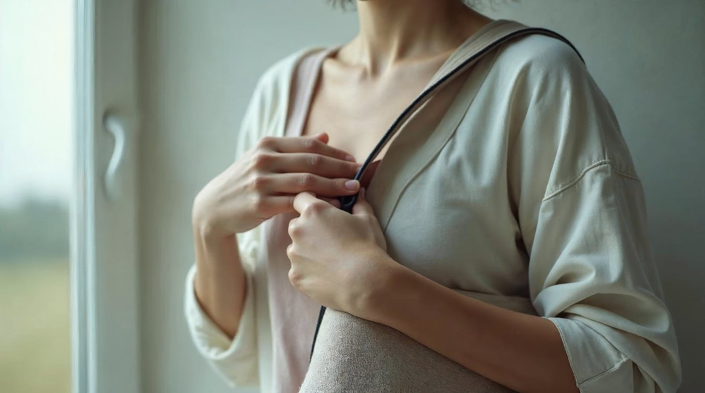
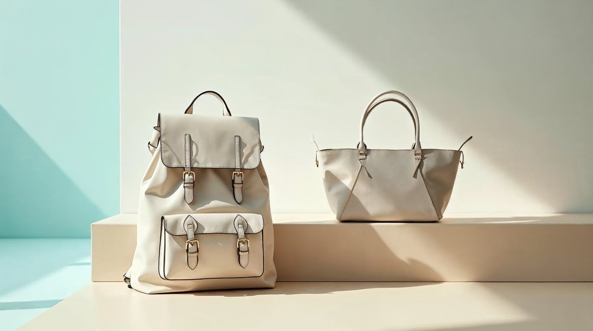
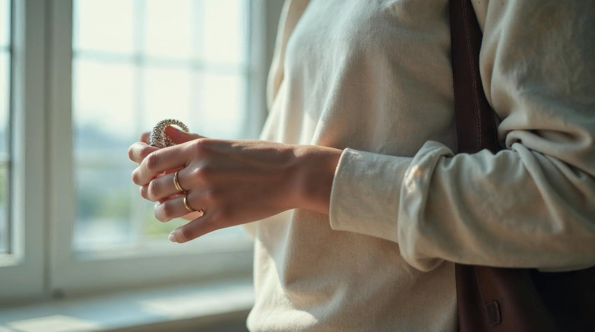

이종호 한의사 감수좋은꿈참사랑한의원 대표원장 (한의사 면허번호 19769)발행 2026-11-24 · 수정 2026-11-26
이 글의 차례
- 왜 이런 불편이 생길 수 있나요
- 어깨 높이가 달라 보이는 이유는 하나일까요?
- 먼저 이렇게 여쭙니다
- 어깨 높이 차이가 다른 불편으로 이어지기도 하나요?
- 상황별 예시
- 거울 앞에서 이렇게 살펴보세요
- 스스로 점검해 보세요
- 일상에서 먼저 해 볼 수 있는 것
- 가방 무게를 줄이는 구체적인 방법
- 공부 자세에서 함께 바꿔 볼 것
- 잠자는 자세도 어깨 높이에 영향을 주나요?
- 사진으로 변화를 살펴보려면?
- 추나는 어떤 경우에 고려하나요?
- 한의원에서 함께 살필 수 있는 경우
- 걸어 다닐 때 가방 무게는 어떻게 나누나요?
- 얼마나 지켜보고 언제 상담할까요
- 다시 오시면 어떤 점을 비교하나요?
- 이렇게 기록해 오시면 상담이 쉬워집니다
- 이런 증상은 먼저 확인이 필요합니다
가방 무게를 줄이고 양쪽 어깨로 나눠 메는 것이 한쪽 어깨에 몰린 긴장을 푸는 가장 쉬운 시작입니다. 노량진을 오가는 수험생의 가방은 책과 노트북으로 늘 무거워, 거울을 보다 한쪽 어깨가 올라가 보인다며 걱정하는 분이 있습니다.
어깨 높이가 조금 달라 보이는 것은 생각보다 흔한 일이고, 가방과 앉는 습관이 함께 얽혀 있는 경우가 많습니다. 다만 한쪽 목과 등이 자주 뭉치고 두통이나 팔 저림까지 이어진다면, 높이 차이만 보지 말고 몸 전체의 균형을 한 번 살펴보시는 것이 좋습니다.
왜 이런 불편이 생길 수 있나요
- 같은 쪽으로 가방을 메면 가방이 흘러내리지 않도록 그쪽 어깨를 계속 들어 올리게 되어 근육이 긴장한 채로 굳기 쉽습니다.
- 무게를 버티느라 몸통이 반대쪽으로 기울면 목과 등, 허리까지 좌우 긴장이 달라질 수 있습니다.
- 공부할 때 한쪽으로 기대 앉거나 턱을 괴는 습관이 더해지면 차이가 더 커 보이기도 합니다.
- 뼈의 모양보다 근육 긴장 때문에 높이가 달라 보이는 경우도 있어 진찰로 확인하는 것이 좋습니다.
- 오른손잡이라면 필기하는 쪽 어깨가 앞으로 말리고 내려가는 경우가 있어, 가방 습관과 겹쳐 차이가 더 커 보이기도 합니다.
- 한의학에서는 한쪽 근육이 오래 긴장하면 그쪽으로 기혈의 흐름이 막혀 뭉침과 결림이 잦아진다고 보고, 잠과 피로도 함께 살핍니다.
어깨 높이가 달라 보이는 이유는 하나일까요?
거울 속 어깨 높이가 다르다고 해서 모두 같은 이유는 아닙니다. 저는 진료실에서 서 있는 모습을 앞과 뒤, 옆에서 보며 어깨만이 아니라 날개뼈, 허리선, 골반까지 함께 비교합니다.
- 목 옆과 어깨 위 근육이 한쪽만 단단하게 뭉쳐 있다면 가방이나 습관에서 오는 근육 긴장을 먼저 생각합니다.
- 한쪽 어깨가 앞으로 말려 있고 가슴 앞이 짧아져 있다면 공부 자세와 필기 습관을 함께 봅니다.
- 어깨뿐 아니라 허리선과 골반 높이도 함께 다르다면 서 있는 습관이나 다리 길이 차이, 척추의 휘어짐을 함께 확인합니다.
- 허리를 앞으로 숙였을 때 등의 한쪽이 더 솟아 보인다면 척추 측만 여부를 영상 검사로 확인해 보시도록 권하기도 합니다.
- 사진에서만 달라 보이고 거울에서는 비슷하다면 찍는 각도나 서 있는 자세 때문일 수도 있습니다.
같은 높이 차이라도 근육 긴장 때문인지, 뼈의 모양 때문인지에 따라 바꿀 수 있는 부분과 지켜볼 부분이 다릅니다. 그래서 겉모습만 보고 판단하기보다 직접 움직여 보고 만져 보며 확인합니다.
예전에 척추가 휘었다는 이야기를 들으셨다면 척추측만증이 있는 사람이 목·어깨가 자주 피곤할 때는 생활에서 무엇을 점검하나요?도 함께 읽어 보세요.

먼저 이렇게 여쭙니다
- 가방 무게가 대략 어느 정도인가요?
- 늘 같은 쪽 어깨로 메나요?
- 목이나 등 한쪽이 더 뻐근한가요?
- 사진이나 거울에서 어깨 높이가 달라 보이나요?
- 공부할 때 턱을 괴거나 한쪽으로 기대 앉나요?
- 잘 때 늘 같은 쪽으로 누워 자나요?
- 두통이나 팔 저림이 함께 있나요?
- 예전에 척추가 휘었다는 이야기를 들은 적이 있나요?
- 가방을 바꾸거나 무게를 줄여 본 뒤 목과 어깨의 느낌이 달라진 점이 있었나요?
어깨 높이 차이가 다른 불편으로 이어지기도 하나요?
어깨 높이가 다른 것 자체보다, 그 상태를 버티느라 생기는 긴장이 다른 불편으로 이어지는 경우가 많습니다. 한쪽 목 옆 근육이 계속 당겨져 있으면 같은 쪽 뒷머리와 관자놀이가 묵직한 두통으로 느껴지기도 합니다.
등 쪽에서는 날개뼈 안쪽이 결리고, 숨을 깊게 들이쉴 때 그 자리가 당긴다고 말하는 분이 있습니다. 몸통이 한쪽으로 기울어 버티는 습관이 오래되면 반대쪽 허리가 뻐근해지기도 합니다.
그래서 어깨 높이 때문에 오셨더라도 두통, 등 결림, 허리 불편이 함께 있는지 여쭙고, 서로 어떻게 이어져 있는지 살핍니다. 이런 불편이 함께 있다면 진료 때 빠뜨리지 말고 말씀해 주세요.
상황별 예시
- 예를 들어 노트북과 기본서 몇 권을 넣은 숄더백을 늘 오른쪽 어깨에 메고 학원과 독서실을 오가는 수험생의 경우, 오른쪽 목과 어깨 위가 자주 뭉치고 거울에서 그쪽 어깨가 올라가 보일 수 있습니다. 백팩으로 바꾸고 그날 필요한 책만 넣는 것부터 시작해 볼 수 있습니다.
- 예를 들어 백팩을 메지만 한쪽 끈만 걸치고 다니는 경우, 숄더백과 크게 다르지 않은 부담이 한쪽에 실립니다. 양쪽 끈을 모두 메고 가방이 등에 붙도록 끈 길이를 맞추는 것이 먼저입니다.
- 예를 들어 독서실 책상에서 왼팔로 턱을 괴고 오른손으로 필기하는 습관이 있는 경우, 가방을 바꿔도 어깨 차이가 그대로 느껴질 수 있습니다. 이럴 때는 가방과 함께 앉는 자세도 같이 바꿔야 합니다.
거울 앞에서 이렇게 살펴보세요
집에서도 간단히 몸의 좌우 차이를 살펴볼 수 있습니다. 전신 거울 앞에 신발을 벗고 편하게 서서 아래 항목을 차례로 보세요.
- 양쪽 귓불에서 어깨 끝까지의 거리가 비슷한지
- 팔을 자연스럽게 내렸을 때 팔과 옆구리 사이 틈이 양쪽 비슷한지
- 양쪽 손끝이 허벅지의 같은 높이에 닿는지
- 허리선과 골반 높이가 수평에 가까운지
차이가 보이더라도 너무 걱정하지 않으셔도 됩니다. 많은 분이 조금씩 좌우 차이를 가지고 있고, 중요한 것은 그 차이 때문에 불편이 생기는지, 시간이 지나며 커지는지입니다.
스스로 점검해 보세요
- 가방을 늘 같은 쪽 어깨에 멘다
- 가방 무게가 몸무게의 10분의 1을 넘는 것 같다
- 거울 앞에서 편하게 섰을 때 한쪽 어깨가 올라가 보인다
- 한쪽 목과 어깨 위만 자주 뭉친다
- 공부할 때 턱을 괴거나 한쪽으로 기대 앉는다
- 잘 때 늘 같은 쪽으로 누워 잔다
세 가지 이상 해당된다면 가방과 자세부터 바꿔 보세요. 바꾼 뒤에도 같은 쪽 뭉침이 계속된다면 진료 때 이 목록을 함께 보며 이야기를 나누면 좋습니다.

일상에서 먼저 해 볼 수 있는 것
- 백팩으로 바꾸고 양쪽 어깨끈을 모두 메기
- 필요한 책만 넣어 가방 무게 줄이기, 전날 밤에 다음 날 시간표를 보고 가방을 미리 싸 두기
- 무거운 짐이 있는 날은 바퀴 달린 가방이나 손수레를 쓰는 것도 생각해 보기
- 한쪽으로 멜 때는 좌우를 번갈아 메기, 지하철역이나 건물 입구처럼 기준이 되는 곳에서 바꾸기
- 저녁에 어깨를 천천히 돌리고 가슴 펴기
- 공부할 때 턱 괴기와 한쪽으로 기대 앉는 습관 줄이기
가방 무게를 줄이는 구체적인 방법
가방 무게를 줄이라는 말은 쉽지만, 공부에 필요한 책을 빼기는 어렵습니다. 몇 가지 방법으로 매일 드는 무게를 나눠 볼 수 있습니다.
- 두꺼운 기본서는 단원별로 나눠 제본하거나, 그날 공부할 부분만 들고 다니기
- 독서실이나 학원 사물함을 쓸 수 있다면 자주 쓰지 않는 책은 그곳에 두기
- 노트북 대신 가벼운 태블릿을 쓸 수 있는 날은 바꿔 들고 다니기
- 물병은 작은 것으로 들고 다니며 필요할 때마다 정수기에서 채우기
- 일주일에 한 번 가방을 비우고 필요 없는 물건 정리하기
가방 무게는 몸무게의 10분의 1 안쪽을 기준으로 삼는 경우가 많습니다. 가방을 체중계에 올려 한 번 재 보면 생각보다 무거워 놀라는 분이 많습니다.
공부 자세에서 함께 바꿔 볼 것
어깨 높이 차이는 가방을 멘 시간보다 앉아 있는 시간에 더 많이 굳어지기도 합니다. 수험생은 하루 대부분을 책상 앞에서 보내기 때문에 가방만큼 공부 자세도 함께 살펴야 합니다.
- 책은 몸 정면에 두고, 한쪽으로 비스듬히 놓고 보지 않기
- 턱을 괴는 대신 두 팔꿈치를 책상 위에 편하게 올려 두기
- 의자에 앉을 때 엉덩이 양쪽에 체중이 고르게 실리는지 확인하기
- 휴대폰을 볼 때도 한쪽 팔만 들지 말고 두 손으로 잡기
- 한 시간에 한 번 일어나 양쪽 어깨를 크게 돌리기
저녁에는 벽에 등을 대고 서서 양쪽 어깨와 뒷머리가 벽에 닿도록 30초쯤 버텨 보세요. 아프지 않은 범위에서 하고, 한쪽이 유난히 벽에서 뜬다면 그 느낌을 진료 때 알려 주세요.
책상 앞에서 쉬는 법은 수험생 1년 차, 목·어깨 뻐근함이 일상이 됐을 때 책상 자세와 쉬는 법은 어떻게 다시 잡나요?에 따로 정리해 두었습니다.
잠자는 자세도 어깨 높이에 영향을 주나요?
하루 일곱 시간 가까이 누워 있는 잠자리도 낮의 습관만큼 몸에 영향을 줍니다. 늘 같은 쪽으로 옆으로 누워 자면 아래쪽 어깨가 앞으로 말리고 눌린 채 밤을 보내, 아침에 그쪽 목과 어깨가 뻐근하다고 말하는 분이 많습니다.
- 옆으로 잔다면 베개 높이를 어깨 너비에 맞춰 목이 아래로 꺾이지 않게 하기
- 품에 쿠션을 안아 위쪽 어깨가 앞으로 떨어지지 않게 받치기
- 바로 누워 자는 시간을 조금씩 늘려 보기
- 엎드려 자는 습관은 목이 한쪽으로 돌아간 채 굳기 쉬워 줄이기
잠버릇은 한 번에 바뀌지 않습니다. 잠들 때만이라도 자세를 의식해 보고, 아침 목 느낌이 어떻게 다른지 기록해 두세요.
사진으로 변화를 살펴보려면?
어깨 높이는 매일 거울로 보면 차이를 알기 어렵습니다. 같은 조건에서 사진을 찍어 두면 몇 주 뒤 비교하기가 훨씬 쉽습니다.
- 같은 장소, 같은 시간대, 비슷한 옷차림으로 찍기
- 신발을 벗고 두 발을 골반 너비로 벌린 채 편하게 서기
- 카메라는 가슴 높이에서 정면으로, 몸 전체가 나오게 찍기
- 앞모습과 뒷모습을 함께 찍고, 2주에 한 번 정도 다시 찍기
사진을 찍을 때 일부러 어깨를 맞추려 힘을 주면 평소 모습과 달라집니다. 숨을 한 번 내쉬고 힘을 뺀 상태에서 찍어 주세요. 진료 때 보여 주시면 진찰 내용과 함께 비교해 봅니다.
추나는 어떤 경우에 고려하나요?
어깨 높이 차이가 근육 긴장과 함께 척추나 골반의 움직임이 한쪽으로 치우친 것과 관련이 있어 보일 때 추나를 함께 고려합니다. 추나는 한의사가 손으로 척추와 골반, 어깨 주변 관절과 근육의 움직임을 살피고 조정하는 수기요법입니다. 소리를 내는 것이 목표가 아닙니다.
진찰에서 목과 등, 골반이 어느 방향으로 덜 움직이는지 확인한 뒤 추나가 지금 상태에 맞는지 판단합니다. 근육 뭉침이 중심이라면 침이나 온열을 먼저 쓰기도 하고, 생활 습관을 바꾸는 것만으로 지켜볼 수 있는 경우도 있습니다. 어떤 방법이든 집에서의 자세 습관과 함께 가야 합니다.
골다공증이 있거나 최근 수술·골절이 있었다면 먼저 말씀해 주세요. 받는 중에 불편하면 바로 말씀해 주시면 세기를 줄입니다.

한의원에서 함께 살필 수 있는 경우
- 어깨 높이가 달라 보이는 경우 자세와 척추·골반의 균형을 함께 살핍니다.
- 한쪽 목과 등이 자주 뭉치는 경우 생활 습관과 근육의 긴장을 함께 살핍니다.
- 어깨 높이 차이와 함께 골반이나 허리선이 달라 보이는 경우 서 있는 모습을 함께 살핍니다.
좋은꿈참사랑한의원에서는 모든 분께 맥부터 짚으며 불편한 곳을 여쭙고, 서 있는 모습과 앉는 자세를 직접 보며 척추·골반의 균형을 살핍니다. 가방 무게와 메는 쪽, 하루 공부 시간과 앉는 습관도 함께 듣습니다.
그다음 목을 돌리고 어깨를 들어 올릴 때 양쪽의 차이, 날개뼈의 높이와 움직임, 누르면 아픈 자리를 확인합니다. 필요하다고 판단될 때 초음파로 아픈 부위를 확인하고, 추나와 침 가운데 지금 상태에 맞는 방법을 정한 뒤 귀가 전에는 집에서 할 수 있는 자세 조정을 알려 드립니다.
걸어 다닐 때 가방 무게는 어떻게 나누나요?
노량진처럼 학원과 독서실, 식당을 오가며 하루에도 여러 번 가방을 메고 걷는 생활이라면 걷는 동안의 습관도 중요합니다. 같은 무게라도 어떻게 들고 걷느냐에 따라 어깨와 목이 받는 부담이 달라집니다.
- 짧은 거리라도 가방을 한 손에 들기보다 양쪽 어깨에 메기
- 손에 드는 짐이 따로 있다면 가방 반대쪽 손으로 들어 무게 맞추기
- 계단을 오를 때 가방이 흔들리지 않도록 끈을 조여 두기
- 식당이나 카페에 들어가면 가방을 의자 위나 바닥에 내려놓고 어깨 쉬게 하기
- 걸을 때 휴대폰을 보며 고개를 숙이지 않고 시선을 앞으로 두기
예를 들어 학원에서 독서실까지 10분을 걷는다면 그 10분 동안만이라도 어깨를 편하게 내리고 팔을 자연스럽게 흔들며 걸어 보세요. 하루에도 몇 번씩 되풀이되는 이동이니, 그 시간의 습관도 가볍게 볼 일은 아닙니다.
겨울에 두꺼운 패딩까지 겹쳐 입는다면 두꺼운 패딩에 무거운 가방까지 메는 겨울에 어깨가 처지고 아프면 어떻게 살피나요?도 참고해 주세요.
얼마나 지켜보고 언제 상담할까요
- 가방과 앉는 자세를 바꾼 뒤 2~3주는 한쪽 목과 어깨의 뭉침이 어떻게 달라지는지 지켜보세요.
- 그 뒤에도 같은 쪽이 계속 뭉치거나 두통이 잦아진다면 상담을 권합니다.
- 팔이나 손이 저리기 시작했다면 2~3주를 채우지 말고 일찍 진료를 받아 보세요.
다시 오시면 어떤 점을 비교하나요?
어깨 높이 차이는 하루아침에 생긴 것이 아니어서, 달라지는 점이 있더라도 천천히 보입니다. 다시 오시면 맥을 다시 짚고, 처음에 확인했던 어깨와 날개뼈의 높이, 목을 돌릴 때의 양쪽 차이를 같은 방법으로 다시 확인합니다.
가방을 바꾼 뒤 한쪽 목의 뭉침이 줄었는지, 두통이 생기는 날이 어떻게 달라졌는지도 여쭙습니다. 찍어 오신 사진이 있다면 처음 사진과 나란히 놓고 봅니다. 지키기 어려웠던 습관이 있다면 생활에 맞게 방법을 바꾸고, 치료 간격도 그 변화를 보며 조정합니다.

이렇게 기록해 오시면 상담이 쉬워집니다
- 가방 무게(대략)와 메는 쪽, 하루 메고 다니는 시간
- 거울이나 사진에서 달라 보이는 부위(어깨, 골반, 허리선)
- 한쪽 목·등이 뭉치는 때와 팔 저림 여부
- 두통이 생기는 날과 위치, 가방을 오래 멘 날과 겹치는지
- 주로 잠드는 자세와 아침에 일어났을 때의 목 느낌
- 공부할 때 턱을 괴거나 기대 앉는 쪽
- 예전에 척추 측만 관련 검사를 받은 적이 있다면 그 결과
- 가방과 자세를 바꾼 날짜와 그 뒤 뭉침의 변화
책이 가득 든 가방은 그만큼 오늘 해내야 할 공부의 무게이기도 하지요. 그 무게를 다 내려놓을 수는 없으니, 나눠 메고 덜어 내는 방법부터 하나씩 찾아보셨으면 합니다. 다음에 오시면 가방을 바꾼 뒤 한쪽 목이 어땠는지부터 여쭙겠습니다.
이런 증상은 먼저 확인이 필요합니다
- 팔이나 손에 힘이 빠지거나 저림이 점점 심해지는 경우
- 어깨나 등 통증이 밤에 더 심해지는 경우
이런 신호가 있으면 한의원보다 가까운 병원이나 응급실을 먼저 찾으세요.

여쭙는 것
- 가방 무게가 대략 어느 정도인가요?
- 늘 같은 쪽 어깨로 메나요?
- 목이나 등 한쪽이 더 뻐근한가요?
생활에서 해 볼 것
- 백팩으로 바꾸고 양쪽 어깨끈을 모두 메기
- 필요한 책만 넣어 가방 무게 줄이기, 전날 밤에 다음 날 시간표를 보고 가방을 미리…
- 무거운 짐이 있는 날은 바퀴 달린 가방이나 손수레를 쓰는 것도 생각해 보기
한의원에서 함께 살필 것
- 어깨 높이가 달라 보이는 경우 자세와 척추·골반의 균형을 함께 살핍니다.
- 한쪽 목과 등이 자주 뭉치는 경우 생활 습관과 근육의 긴장을 함께 살핍니다.
- 어깨 높이 차이와 함께 골반이나 허리선이 달라 보이는 경우 서 있는 모습을 함께 살…
먼저 확인이 필요한 신호
- 팔이나 손에 힘이 빠지거나 저림이 점점 심해지는 경우
- 어깨나 등 통증이 밤에 더 심해지는 경우
한눈에 보는 표
| 구분 | 핵심 |
|---|---|
| 여쭙는 것 | 가방 무게가 대략 어느 정도인가요? 늘 같은 쪽 어깨로 메나요? |
| 생활에서 해 볼 것 | 백팩으로 바꾸고 양쪽 어깨끈을 모두 메기 필요한 책만 넣어 가방 무게 줄이기, 전날 밤에 다음 날 시간표를 보고 가방을 미리 싸 두기 |
| 한의원에서 함께 살필 것 | 어깨 높이가 달라 보이는 경우 자세와 척추·골반의 균형을 함께 살핍니다. 한쪽 목과 등이 자주 뭉치는 경우 생활 습관과 근육의 긴장을 함께 살핍니다. |
| 먼저 확인이 필요한 신호 | 팔이나 손에 힘이 빠지거나 저림이 점점 심해지는 경우 어깨나 등 통증이 밤에 더 심해지는 경우 |
자주 묻는 질문
어깨 높이가 다르면 꼭 교정이 필요한가요?
생활 습관만 바꿔도 편해지는 경우가 있어, 진찰 후 필요한 방법을 함께 정합니다.
백팩이 늘 더 좋은가요?
양쪽으로 무게를 나눌 수 있어 도움이 되지만, 너무 무거우면 백팩도 부담이 되니 무게를 줄이는 것이 먼저입니다.
진료 시간은 어떻게 되나요?
좋은꿈참사랑한의원은 평일 09:30~20:00(점심 13:00~14:00), 토·일·공휴일 09:30~15:00에 진료합니다.
좋은꿈참사랑한의원은 재진 때 지난번 이야기부터 이어서 여쭙니다. 진료시간과 예약은 오시는 길에서 확인하세요.
어디서 상담받을 수 있나요?
좋은꿈참사랑한의원은 서울 동작구 만양로2길 2 신성빌딩 3층·5층(서울 동작구 상도동, 7호선 상도역 3번 출구 근처)에 있습니다. 한의사 3명(이종호 대표원장, 조영기 수석진료원장, 정원영 진료원장)이 진료합니다. 진료시간은 평일 09:30~20:00(점심 13:00~14:00), 토·일·공휴일 09:30~15:00이며, 방문 전 전화로 확인을 권합니다. 예약은 네이버 예약, 카카오톡 상담, 전화 02-815-7510로 받습니다.
이 글은 일반적인 건강 정보이며 개인의 진단이나 치료를 대신하지 않습니다. 증상이 있거나 복용 중인 약이 있다면 진료를 통해 확인하세요. 치료 효과는 개인마다 다를 수 있습니다.
작성 기준: 일반적으로 알려져 있는 건강 정보를 참고해 정리했습니다(대표원장 감수). 증상 기록은 1~2주 동안 하루 1회, 비슷한 시간에 적어 오시면 지난 상태와 비교하기 쉽습니다.